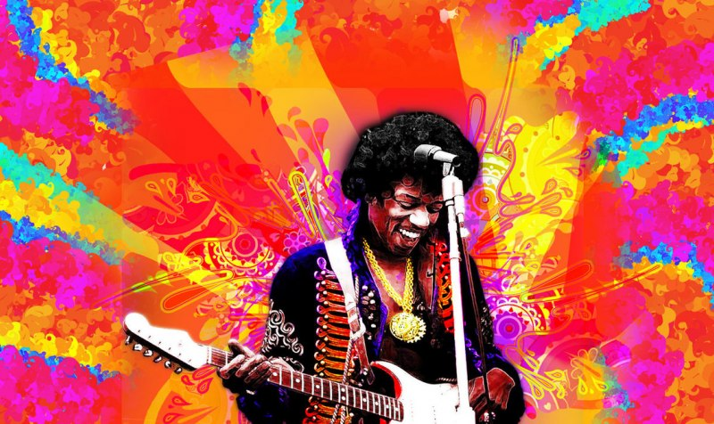
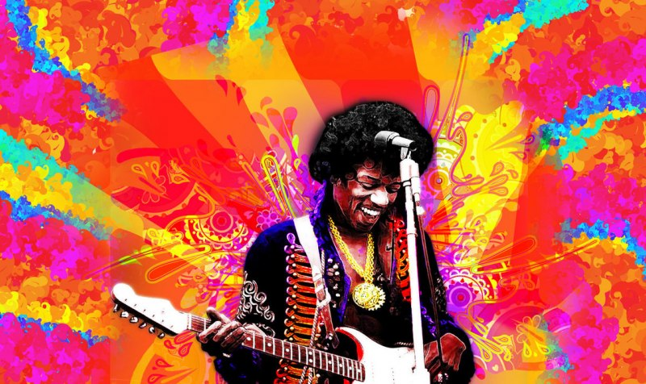
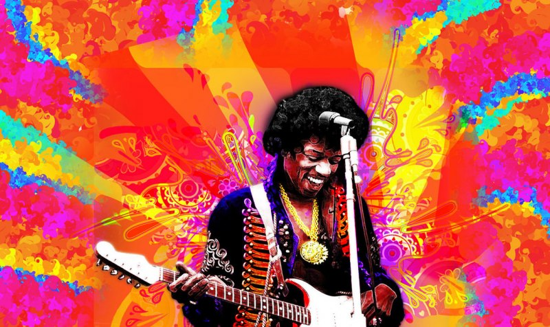

Descubrí la lista de las 500 mejores canciones de la historia estando en la secundaria. Esta lista ha marcado mis gustos musicales hasta el sol de este día. Esta recopilación me enseñó géneros musicales y artistas que nunca había escuchado antes y me convirtió en un gran fan de el blues, el rock, el disco, es decir, de la música de la esfera cultural norteamericana, canciones que han marcado la cultura de los Estados Unidos y de la sociedad occidental por consecuencia.

Cuando descubrí que la revista Rolling Stone, autora de esta lista, había publicado una nueva iteración de la lista que marcó mi adolescencia sentí una gran emoción y una mayor curiosidad sobre la nueva forma que había tomado esta lista. Puesto que habían pasado 17 años desde la primera aparición de esta lista, me surgieron más de una pregunta ¿Cómo luciría esta después de tantos años? ¿Se mantendrían los favoritos de la primera lista? ¿Habrían nuevos estilos musicales más representados? ¿Cómo las nuevas canciones y artistas de nuestro siglo les iría contra los clásicos de la música anglosajona? Todas estas preguntas y muchas más busca responder este trabajo periodístico, además de ser un pequeño homenaje a la música popular norteamericana, a la que tanto yo como muchas personas le tenemos un aprecio inmenso.
La lista de las 500 mejores canciones de la historia es publicada por primera vez por la revista Rolling Stone en el año 2004. En esta se recogen las canciones más inflluyentes culturalmente en el panorama musical estadounidense. En esta labor estuvieron involucrados más de 150 importantes críticos musicales, productores y músicos de la música popular anglosajona; por tanto se puede decir que esta lista refleja la opinión general de la crítica del mundo angloparlante.En el año 2021, la revista Rolling Stone confeccionó una nueva lista, donde más de la mitad de las canciones aparecen por primera vez.
| 2004 Canción | 2004 Intérprete | 2021 Canción | 2021 Intérprete | |
|---|---|---|---|---|
| Like A Rolling Stone | Bob Dylan | Respect | Aretha Franklin | ⬆ |
| (I Can't Get No) Satisfaction | The Rolling Stones | Fight the Power | Public Enemy | ⬆ |
| Imagine | John Lennon | A Change Is Gonna Come | Sam Cooke | ⬆ |
| What's Going On? | Marvin Gaye | Like A Rolling Stone | Bob Dylan | ⬇ |
| Respect | Aretha Franklin | Smells Like Teen Spirit | Nirvana | ⬆ |
| Good Vibrations | The Beach Boys | What's Going On? | Marvin Gaye | ⬇ |
| Johnny B. Goode | Chuck Berry | Strawberry Fields Forever | The Beatles | ⬆ |
| Hey Jude | The Beatles | Get Ur Freak On | Missy Elliott | + |
| Smells Like Teen Spirit | Nirvana | Dreams | Fleetwood Mac | + |
| What'd I Say? | Ray Charles | Hey Ya! | Outkast | ⬆ |
Con sólo ver los 10 primeros lugares de la nueva lista, podemos hipotetizar una nueva tendencia. Esta es la presencia de 3 canciones de género urbano en el top 10, lo cuál es un cambio interesante ya que originalmente no había ninguna en este top y de repente están "Hey Ya!" y "Fight the Power" que previamente ocupaban los lugares 180 y 322, además de la nueva incorporación con mayor posición , la canción "Get Ur Freak On" de la cantante urbana Missy Elliott. A continuación analicemos si esto refleja un nuevo cambio de opinión en la crítica analizando el resto de la lista según el género musical.
En los gráficos anteriores se evidencia lo planteado anteriormente. La música urbana ha comenzado a ser más reconocida por la crítica musical, aumentando su presencia en 40 canciones. Esto es posiblemente debido al aumento en la popularidad de este género en el siglo XXI. Pero queda evidente que el género dominante es el Rock, esto probablemente debido a la gran popularidad que contaba este género musical en el siglo XX, siendo de los más presentes e innovadores. Otro detalle que se puede observar es la aparición en la nueva lista de géneros musicales latinos por primera vez, los cuales, aún en pequeña proporción demuestran una nueva apreciación por estos géneros en la cultura anglosajona, con importantes exponentes como Celia Cruz y el más moderno Bad Bunny, que es el único cantante de habla hispana que participa en dos canciones de la lista. También apareciendo la samba brasileña por primera vez.
Se puede evidenciar la prevalencia de las décadas de los 60 y los 70 como las favoritas de la crítica, esto es probablemente debido a la influencia que tienen esas décadas en la música posterior, siendo el origen del blues y el rock and roll, los géneros más influeyentes en la música moderna. También salta a la vista que la última lista cubre un mayor espacio de tiempo que la anterior, comenzando la primera en 1954 y la del 2021 en el año 1937 con Billie Holiday.
Resumiendo, se puede concluir que la nueva iteración de la lista representa un cambio en la crítica musical durante este siglo. Sin olvidar los clásicos más importantes, se varía más la selección, se nota el alza de la música urbana como un nuevo género influeyente en la cultura y se reconoce la presencia de los gustos hispanos.